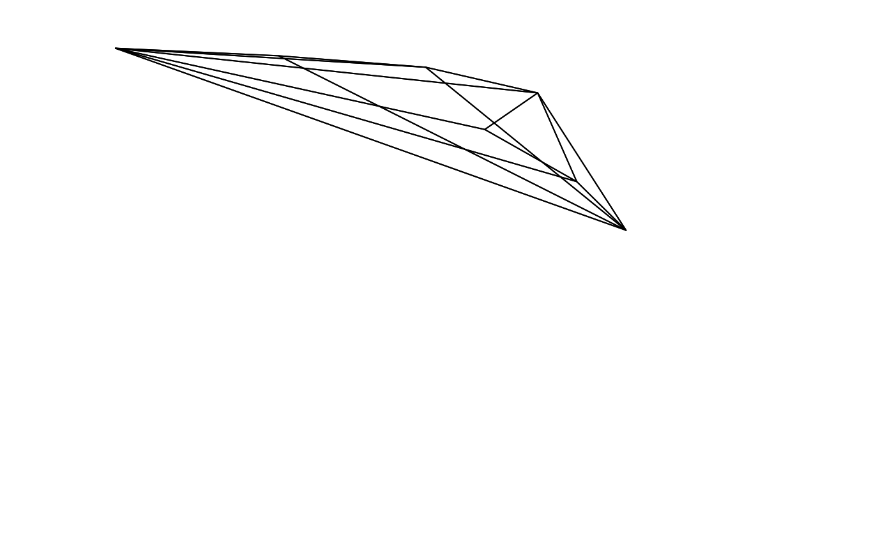
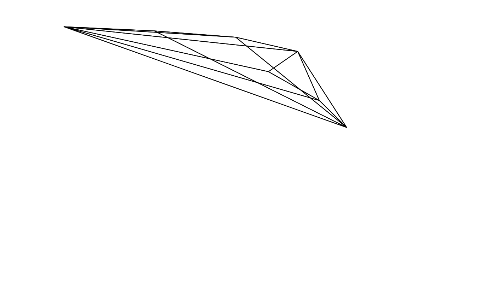

Calculates the overlap between the volumes defined by two sets of points in cartesian space.
Arguments
- colsp1, colsp2
(required) data frame, possibly a result from the
colspace()function, containing values for the 'x', 'y' (and possibly 'z') coordinates as columns (labeled as such)- type
if "convex", the colour volume is plotted using a convex hull and if "alpha", it is plotted using alphashapes.
- avalue
if
type = alpha, the alpha parameter values forcolsp1andcolsp2respectively to compute the alphashapes. Can be a numeric of length one if the same value is used in both cases.avalue = "auto"(default) finds and use the \(\alpha^*\) value as defined in Gruson (2020).- plot
logical. Should the volumes and points be plotted? (defaults to
FALSE). This only works for tetrahedral colourspaces at the moment.- interactive
logical. If
TRUE, uses the rgl engine for interactive plotting; ifFALSEthen a static plot is generated.- col
a vector of length 3 with the colours for (in order) the first volume, the second volume, and the overlap.
- fill
logical. should the two volumes be filled in the plot? (defaults to
FALSE)- new
logical. Should a new plot window be called? If
FALSE, volumes and their overlap are plotted over the current plot (defaults toTRUE).- nsamp
if
type = "alpha", the number of points to be sampled for the Monte Carlo computation. Stoddard & Stevens(2011) use around 750,000 points, but more or fewer might be required depending on the degree of overlap.- psize
if
type = "alpha"andplot = TRUE, sets the size to plot the points used in the Monte Carlo computation.- lwd
if
plot = TRUE, sets the line width for volume grids.- ...
additional arguments passed to the plot. See
vol()
Value
Calculates the overlap between the volumes defined by two set of points in colourspace. The volume from the overlap is then given relative to:
vsmallestthe volume of the overlap divided by the smallest of that defined by the the two input sets of colour points. Thus, if one of the volumes is entirely contained within the other, this overlap will bevsmallest = 1.vboththe volume of the overlap divided by the combined volume of both input sets of colour points. Iftype = "alpha", If used, the output will be different:s_in1, s_in2the number of sampled points that fall within each of the volumes individually.s_inboththe number of sampled points that fall within both volumes.s_ineitherthe number of points that fall within either of the volumes.psmallestthe proportion of points that fall within both volumes divided by the number of points that fall within the smallest volume.pboththe proportion of points that fall within both volumes divided by the total number of points that fall within both volumes.
Note
Stoddard & Stevens (2011) originally obtained the volume overlap through Monte Carlo simulations of points within the range of the volumes, and obtaining the frequency of simulated values that fall inside the volumes defined by both sets of colour points.
Stoddard & Stevens (2011) also return the value of the overlap relative to one of the volumes (in that case, the host species). However, for other applications this value may not be what one expects to obtain if (1) the two volumes differ considerably in size, or (2) one of the volumes is entirely contained within the other. For this reason, we also report the volume relative to the union of the two input volumes, which may be more adequate in most cases.
References
Stoddard, M. C., & Prum, R. O. (2008). Evolution of avian plumage color in a tetrahedral color space: A phylogenetic analysis of new world buntings. The American Naturalist, 171(6), 755-776.
Stoddard, M. C., & Stevens, M. (2011). Avian vision and the evolution of egg color mimicry in the common cuckoo. Evolution, 65(7), 2004-2013.
Maia, R., White, T. E., (2018) Comparing colors using visual models. Behavioral Ecology, ary017 doi:10.1093/beheco/ary017
Gruson H. (2020). Estimation of colour volumes as concave hypervolumes using \(\alpha\)-shapes. Methods in Ecology and Evolution, 11(8), 955-963 doi:10.1111/2041-210X.13398
Examples
data(sicalis)
tcs.sicalis.C <- subset(colspace(vismodel(sicalis)), "C")
tcs.sicalis.T <- subset(colspace(vismodel(sicalis)), "T")
tcs.sicalis.B <- subset(colspace(vismodel(sicalis)), "B")
# Convex hull volume
voloverlap(tcs.sicalis.T, tcs.sicalis.B, type = "convex")
#> vol1 vol2 overlapvol vsmallest vboth
#> 1 5.183721e-06 6.281511e-06 6.904074e-07 0.1331876 0.06407598
voloverlap(tcs.sicalis.T, tcs.sicalis.C, type = "convex", plot = TRUE)
 #> vol1 vol2 overlapvol vsmallest vboth
#> 1 5.183721e-06 4.739152e-06 0 0 0
voloverlap(tcs.sicalis.T, tcs.sicalis.C, type = "convex", plot = TRUE, col = seq_len(3))

#> vol1 vol2 overlapvol vsmallest vboth
#> 1 5.183721e-06 4.739152e-06 0 0 0
# Alpha-shape volume
if (require("alphashape3d")) {
voloverlap(tcs.sicalis.T, tcs.sicalis.B, type = "alpha", avalue = 1)
}
#> vol1 vol2 s_in1 s_in2 s_inboth s_ineither psmallest pboth
#> 1 5.183721e-06 6.231493e-06 12 15 3 24 0.25 0.125
#> vol1 vol2 overlapvol vsmallest vboth
#> 1 5.183721e-06 4.739152e-06 0 0 0
voloverlap(tcs.sicalis.T, tcs.sicalis.C, type = "convex", plot = TRUE, col = seq_len(3))

#> vol1 vol2 overlapvol vsmallest vboth
#> 1 5.183721e-06 4.739152e-06 0 0 0
# Alpha-shape volume
if (require("alphashape3d")) {
voloverlap(tcs.sicalis.T, tcs.sicalis.B, type = "alpha", avalue = 1)
}
#> vol1 vol2 s_in1 s_in2 s_inboth s_ineither psmallest pboth
#> 1 5.183721e-06 6.231493e-06 12 15 3 24 0.25 0.125